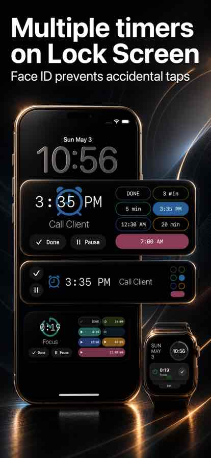
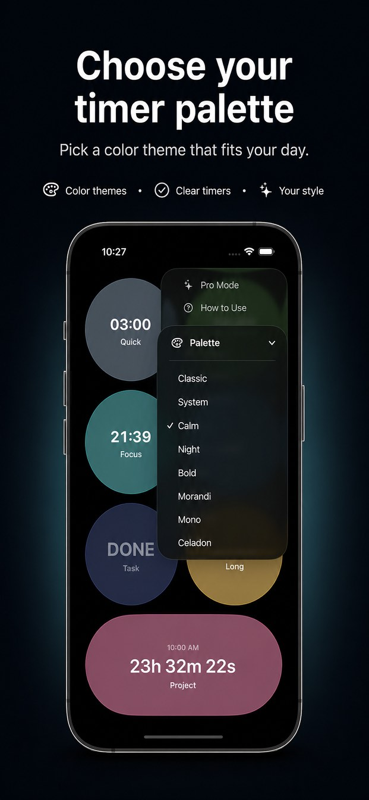
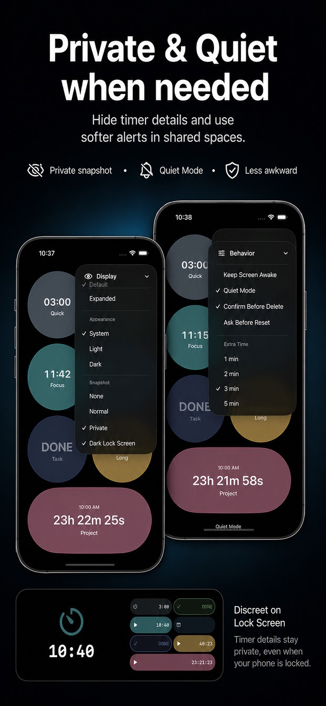
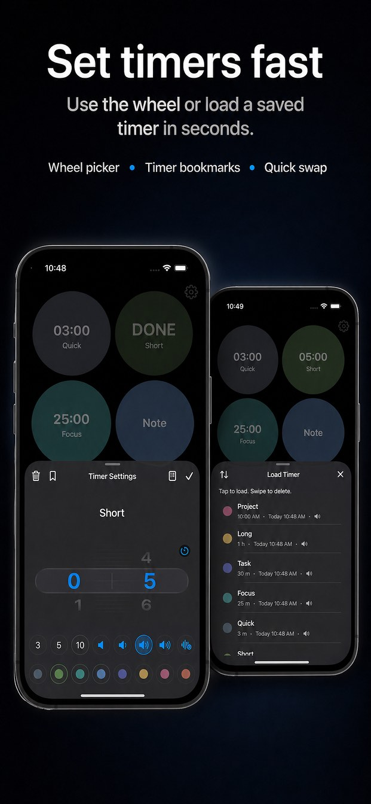
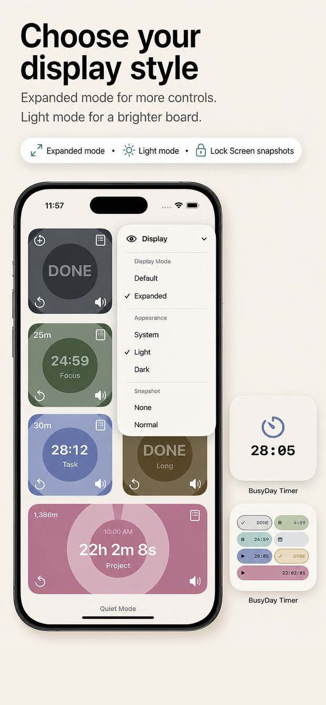

Set a Timer
Long-press a timer to open Timer Settings. Use the wheel and bookmarks to set timers quickly.
App Support
Multiple timers for busy days. Manage them at a glance and check status right from the Lock Screen.

Use one board to manage multiple timers and notes. These are the features most people need first.
BusyDay Timer works fully on iPhone. Apple Watch adds wrist alerts and quick actions.
Long-press a timer to open Timer Settings. Use the wheel and bookmarks to set timers quickly.
When your iPhone is locked, you can still check timer status. When a timer rings, stop it or add extra time from the alert.
Check the next timer on Apple Watch. When a timer rings, you can stop it or add extra time.
Record your own alarm sound for each timer so different timers can use different alerts.
Turn on Quiet Mode for softer alerts in shared spaces. On Apple Watch, use the watch's own Silent Mode.
Add timer widgets to check your timers from the Home Screen without opening the app.
The core workflow is simple: set timers, keep the board visible, and use quick controls when something needs attention.
Long-press a timer to open Timer Settings. Use the wheel picker, quick duration buttons, and saved bookmarks.
Tap a timer to start or pause it. Tap a ringing timer to stop it. Tap a finished timer to reset it.
Save common timer setups as bookmarks, then load them when you need the same timer again.
Start a timer, lock your iPhone, and confirm the timer board appears on the Lock Screen snapshot.
Use Display settings to choose the snapshot style, board appearance, palettes, and whether timer titles stay private.
BusyDay Timer is built for moments when you cannot keep opening the app.
Use the snapshot to check timer status while your iPhone is locked. Snapshot buttons can pause, resume, stop, or add time when available.
If you use Apple Watch, check the Smart Stack timer view and action button while a timer is active.
To add a widget, touch and hold the Home Screen, tap Edit, tap Add Widget, then search for BusyDay Timer.
Try these checks before contacting support. They cover the most common timer, Lock Screen, Watch, sound, widget, and language issues.
Start at least one timer, lock your iPhone, and wait a moment. If the snapshot is still missing, confirm Live Activities and notifications are allowed for BusyDay Timer in iOS Settings.
Keep the iPhone app installed and paired with your watch. Start a timer on iPhone, then check the Smart Stack or timer alert on Apple Watch.
Use Quiet Mode for softer alerts. For Watch alerts, use Apple Watch Silent Mode or adjust haptics in Watch settings.
iOS controls widget refresh timing. Open BusyDay Timer once, confirm the timer is running, then give the widget a moment to refresh.
Open Display settings and choose a private snapshot style when you do not want task names visible on a locked or shared screen.
Open the app's language menu and choose System Default or a specific language. This support page also has its own language selector at the top.
Last updated: May 4, 2026
BusyDay Timer is designed to keep your timer data local to your device.
BusyDay Timer does not collect, sell, or share personal data.
Timer names, notes, settings, preferences, custom alarm sounds, and saved timers are stored locally on the user's device and are not sent to the developer.
BusyDay Timer does not use third-party analytics, advertising SDKs, tracking SDKs, or account login services.
Apple services such as iCloud, TestFlight, App Store purchases, crash reports, and Apple Watch synchronization are provided by Apple and are subject to Apple's privacy practices.
For support, contact chanshuowu@icloud.com. Information included in support emails is used only to respond to the request.
For privacy on shared or locked screens, BusyDay Timer includes private Lock Screen snapshots to hide timer details when you do not want others to see your task names.
Screenshots from BusyDay Timer showing the main support topics.




Short answers for common support questions.
Long-press a timer to open Timer Settings. Use the wheel picker, quick duration buttons, or load a saved timer bookmark.
Tap a timer to start or pause it. Tap a ringing timer to stop it. Tap a finished timer to reset it.
Yes. BusyDay Timer supports custom alarm sounds, including recording your own alert sound for each timer.
Turn on Quiet Mode for softer alerts. On Apple Watch, use the Watch's own Silent Mode.
Yes. Use private Lock Screen snapshots to hide timer details when you do not want others to see your task names.
Yes. The app lets you switch between supported languages anytime.
If you need help with BusyDay Timer, include your iPhone model, iOS version, BusyDay Timer version, and a short description of what happened.
Support emails are used only to respond to your request.
Support: chanshuowu@icloud.com